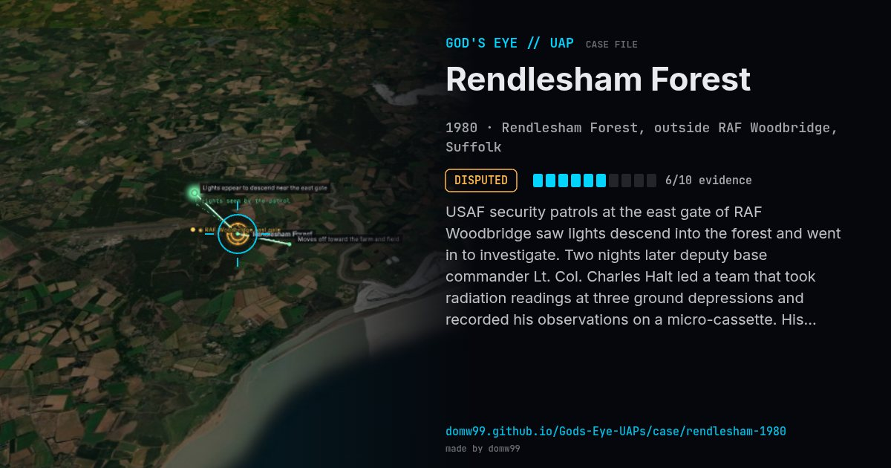

Rendlesham Forest
DISPUTED

USAF security patrols at the east gate of RAF Woodbridge saw lights descend into the forest and went in to investigate. Two nights later deputy base commander Lt. Col. Charles Halt led a team that took radiation readings at three ground depressions and recorded his observations on a micro-cassette. His memo to the MoD is one of the most famous UFO documents in Britain.
Explanation
The Ministry of Defence found no threat and did not investigate further. Skeptics attribute the lights to a fireball, the Orford Ness lighthouse (visible through the trees in the same direction) and bright stars.
What was seen
Shape: Metallic lit object in the forest; star-like lights
Witnesses: USAF security police; Lt. Col. Charles Halt
Duration: Two nights
Sources
Browse
- United Kingdom
- 1980s
- Disputed
- Military encounters
- Official government documents
- Military witnesses
- Physical traces
- Audio recordings or radio transcripts
- Lights and fireballs